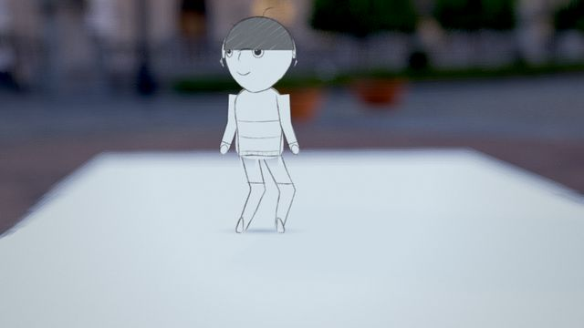
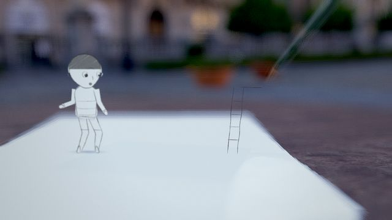
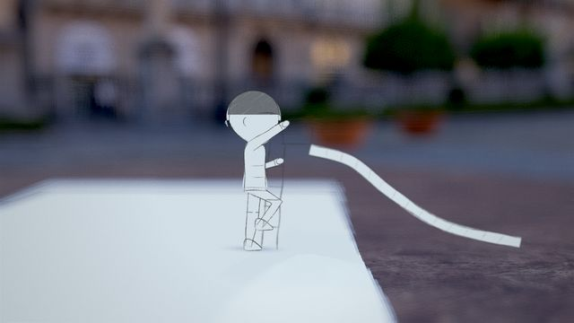
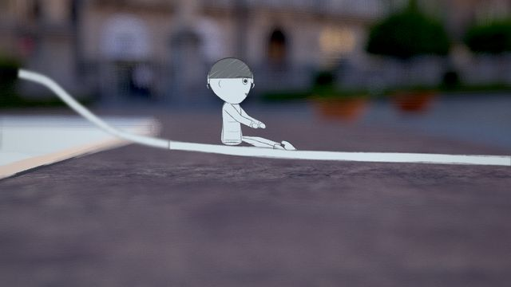
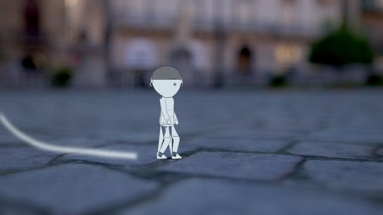
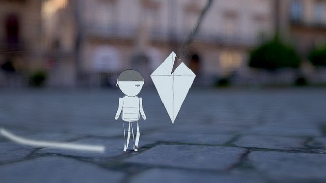
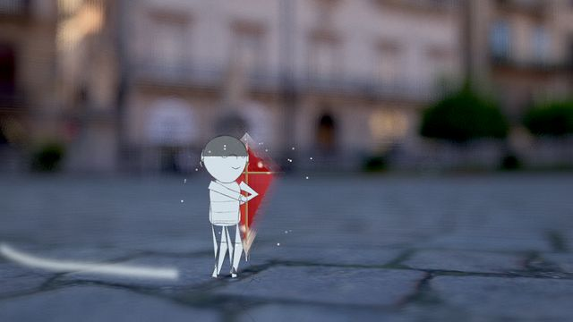
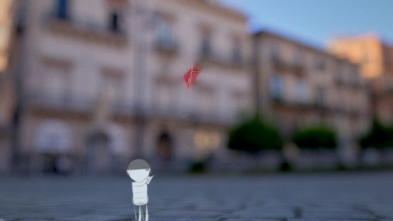
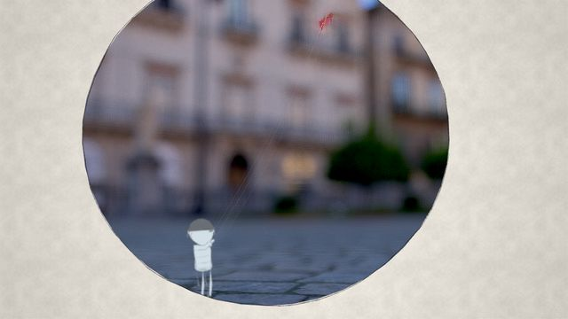

작업 흐름
- 입력
- 주제 한 줄 (예: 연을 날리는 소년, 사과를 찾는 소녀)
- 브리프
- 장소(HDRI와 바닥·탁자 스캔), 주인공의 무게와 대기 동작, 진짜 연필이 그려 줄 출구, 내려가는 길, 진짜가 될 그림, 마무리 틀, 시간표
- 설계
- 데이터로 만든 주인공(여덟 방향과 좌우 움직임 캐스트 시트), 발자국부터 정하는 걸음, 3D로 서는 그림, 스캔이나 코드로 만든 진짜 물건
- 검사
- 관절 범위, 디딘 발 미끄러짐, 숨 쉬는 대기, 예비 동작과 회복, 떠 있는 연필, 그림에 색 없음, 결정성
- 출력
- 1920×1080 MP4(24fps, 소리 포함)와 라이브 페이지
node pencil-live-action/scripts/new-film.mjs my-film --from kite
node pencil-live-action/scripts/fetch-assets.mjs my-film
cd my-film
node ../pencil-live-action/scripts/check.mjs film.html
node ../pencil-live-action/scripts/score.mjs film.html --out out/film.wav
node ../pencil-live-action/scripts/render.mjs film.html --workers 3 --audio out/film.wav요구 사항: Node, Playwright Chromium, ffmpeg, curl(스캔을 한 번 받을 때). GPU는 없어도 됩니다. 단계별 순서는 SKILL.md에 있습니다.
샘플
원본에 없는 새 주제 두 편을 이 스킬로 만든 장면입니다. 카드를 누르면 그 장면부터 브라우저에서 재생됩니다(스캔을 Poly Haven에서 받느라 처음 몇 초 걸립니다).
「The Kite」 30초 · 원테이크 · 팔레르모 광장
햇살 좋은 광장의 카페 탁자 위 스케치북에서, 모자를 쓴 연필 소년이 진짜 연필이 그려 준 미끄럼틀을 타고 돌바닥까지 내려가 진짜 빨간 연을 날립니다.









「The Apple」 16.5초 · 시작 템플릿 · 자갈 골목
골목 카페 탁자 위 스케치북에서 소녀가 연필이 그려 준 우산을 펴고 내려가, 자기만 한 사과 그림에 손을 대면 진짜 사과(스캔)가 됩니다. 같은 문법을 짧게 담은 출발점입니다.
실제 작품
이 레포에서 만든 스킬입니다. OscarAI(@Artedeingenio)가 X에 올린 30초 영상 「The Girl Who Drew a Door」가 출발점입니다. 카페 탁자 위 스케치북의 연필 그림 소녀에게 진짜 손이 문과 계단을 그려 주고, 소녀가 돌바닥 거리로 내려가 그린 꽃을 진짜로 만들고, 하트가 화면을 닫는 영상으로, 영상 생성 모델로 만든 것입니다. 이 스킬은 그 문법(종이 → 진짜의 손길 → 3D로 서는 출구 → 종이 밖으로 → 내려가는 길 → 캐릭터 눈높이의 세계 → 진짜가 되는 그림 → 종이로 돌아가는 마무리)과 매체(실사 배경 위 흑연 그림)만 가져오고, 화면은 직접 만든 엔진이 그립니다. 실제 세계는 Poly Haven의 CC0 스캔(HDRI, 바닥과 탁자 재질, 사과)으로, 그림은 캔버스로 그립니다. 예제의 인물과 이야기, 소품, 음악은 모두 이 레포의 것입니다.
링크
- SKILL.md 워크플로
- 폴더 lib · scripts · references · templates · examples
- README.md 빠른 시작
- references/BRIEF.md 주제에서 브리프로, 검토 기준
- references/LOOK.md 원본에서 관찰한 두 세계와 문법
- references/GRAMMAR.md 원테이크의 박자, 시간, 카메라
- references/API.md 라이브러리
- references/LESSONS.md 겪은 문제와 해결